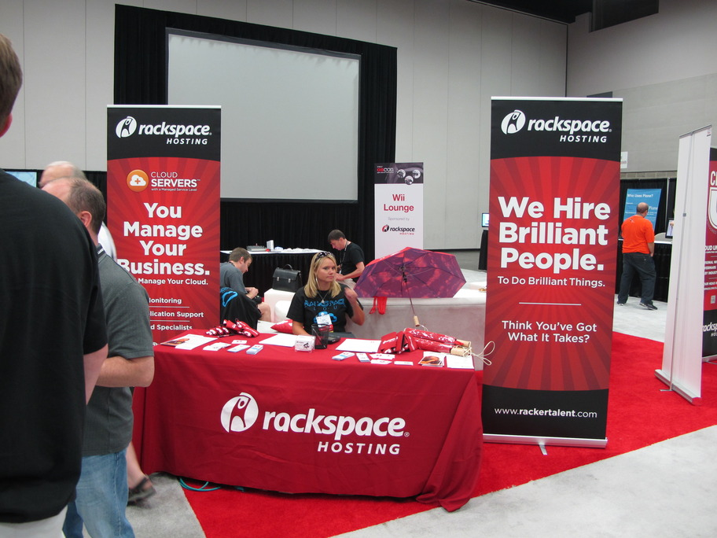
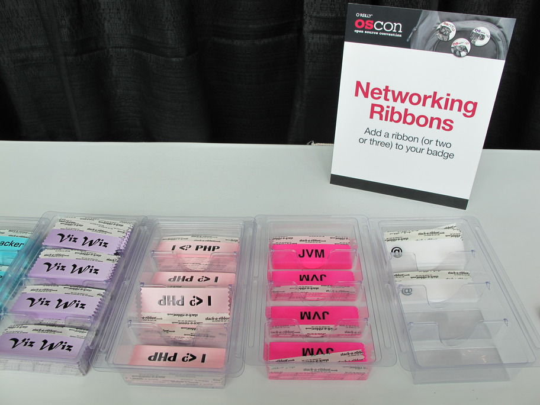
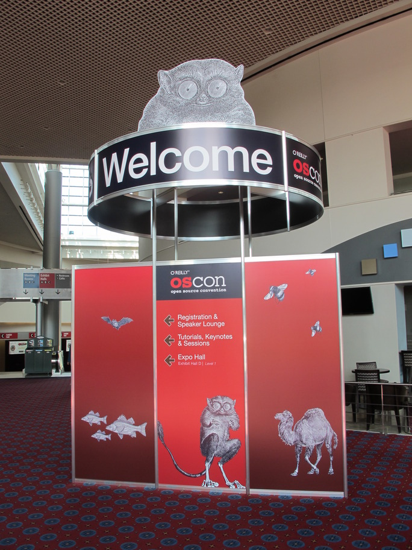

也紀念我們永遠的朋友 李士傑先生（Shih-Chieh Ilya Li）。
一年一度的開放源碼大會－OSCON 2011 參與報告
 每年七月份的第三週，O'Reilly 公司都會在美國俄勒岡州的波特蘭會議中心舉辦一年一度為期一周的開放源碼大會 Open Source Convention (OSCON )。連續五天的會議分為兩個階段，第一階段均為教學演講，於第一、二天舉行，每場均為三小時。大多數的講者為自由軟體開發團隊的成員，演講中會利用一半的時間舉行許多實際操作的活動，讓與會的來賓能夠直接跟自由軟體開發者互動，從中交流討論相關知識。
每年七月份的第三週，O'Reilly 公司都會在美國俄勒岡州的波特蘭會議中心舉辦一年一度為期一周的開放源碼大會 Open Source Convention (OSCON )。連續五天的會議分為兩個階段，第一階段均為教學演講，於第一、二天舉行，每場均為三小時。大多數的講者為自由軟體開發團隊的成員，演講中會利用一半的時間舉行許多實際操作的活動，讓與會的來賓能夠直接跟自由軟體開發者互動，從中交流討論相關知識。
Google 員工 Wesley Chun 舉辦了一場名為 Google App Engine 的工作坊，在短短三個小時中，分享在 Google 公司內部的開發經驗，也介紹了 Google App Engine 的實例應用，最後透過 Google App Engine 用 Python 程式語言做了簡單的教學範例。經過一連串的介紹與實際操作，我更加了解 Google App Engine的強大功能。

▲圖2：雲端服務供應商 Rackspace 的攤位
此外，StatusNet 的開發團隊也舉辦名為 Building Social Applications with StatusNet 的演講，創辦人兼開發者 Evan Prodromou介紹了 StatusNet 的創辦過程、如何撰寫 StatusNet 的外掛程式、分享 StatusNet 的 API 開發經驗，最後由 StatusNet 的開發團隊帶領現場聽眾於本機電腦上自行架設完整的 StatusNet，並且撰寫簡單的音樂模組。

▲圖3：供參與者掛在識別證的技術標籤，讓其他人在交誼時能一眼就知道你會什麼技術
從第三天起，OSCON 安排了一系列的自由軟體相關議題探討，包含許多最新技術的分享以及新軟體發表。除了既定議程之外，也有許多自由軟體的開發者及廠商，在活動當天現場預約會議室招集同好加入。這些臨時會議往往吸引更多志同道合的人，我也在這裡認識了來自各國的 PHP 開發者。
OSCON 的眾多演講中，Leif Hedstrom主講的 Deploying Apache Traffic Server 就是針對多重服務網站部署分散流量伺服器 (Apache Traffic Server) 做介紹，我認為這是目前 OpenFoundry 可以參考的網站系統架構。另外還有 Lance Albertson 所主講的 Ganeti Web Manager: Cluster Management Made Simple 等相關議題，這些講者介紹的內容均是網站主機擴充時所會面臨的問題。這次前往參加 OSCON 2011 的目的之一，是希望藉由跟開發者溝通以解決工作上面臨的問題。我知道許多網站規模成長時，伴隨流量增加，面臨大量同時連線的情況，往往造成系統 IO介面存取效能低落，進而導致服務停擺。若能夠將網站伺服器的流量分散部署，不僅能夠解決這個問題，也能提升網站服務品質。

▲圖4：OSCON 入口的大立牌，上頭的眼鏡猴是 OSCON 的吉祥物
關於程式開發的探討內容更加多元豐富，網頁開發系列議題包含了 Is HTML5 Ready for Production?、CouchApps with CouchDB, JavaScript & HTML5、HTML5 & CSS3: The Good Enough Parts、HTML5: All about Web Forms 等新技術議題。這些新穎的技術雖然無法直接套用在 OpenFoundry 網站，但是在未來的網站開發規劃中，這些技術層面絕對值得納入考量。
OSCON 安排的演講內容除了系統管理、網頁程式開發之外，還有許多不同領域的介紹，其中有些講者針對開發工具做了些介紹，例如 Sebastian Bergmann 講者談了一系列關於 PHP 開發、驗證、調教的相關議題，其中包含了 Reviewing PHP Code、Testing LAMP Applications 及 Integrate Your PHP Project with Jenkins 等，這些議題開發 PHP 程式專案中相當重要。除了 PHP 之外，整場活動也有介紹不同程式語言的演講，但是由於不同領域的演講會同時進行，因此無法參與所有的議題，頗為可惜。參與這次 OSCON 活動後，我除了學習到新技術外，也認識了許多來自世界各地的自由軟體開發者。在短暫的互動中，我向他們分享 OpenFoundry 網站，他們都很驚訝，並讚美 OpenFoundry 在自由軟體的價值：What a powerful weapon!，也希望我們能夠在明年度的 OSCON 介紹 OpenFoundry 給大家認識。
我在 OSCON 介紹台灣的影片
https://www.youtube.com/watch?v=ncU6_jG4P7Q
作者簡介
黃崇閔，現任職自由軟體鑄造場，擔任軟體工程師，喜歡透過自動化的程式，解決枯燥乏味的工作內容。
Special


Address：No.128, Sec.2, Academia Rd., Institute of Information Science, Academia Sinica, Nangang District, Taipei City 11529, Taiwan (R.O.C).
Privacy Policy. Terms-of-use